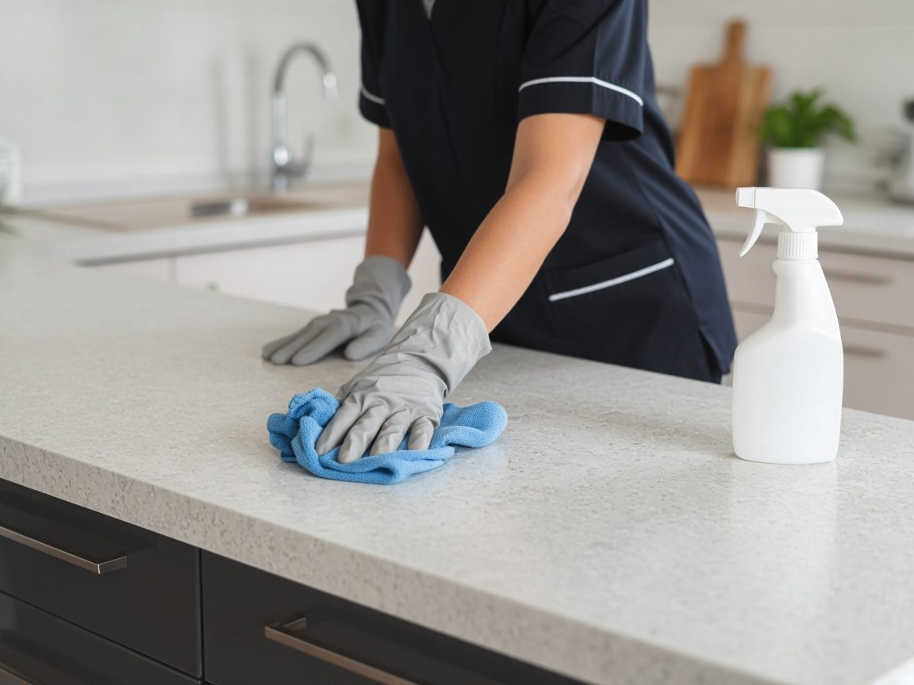

About
A local cleaning, handyman & property maintenance business serving Scarborough and the surrounding area.
Contact & Hours
Phone
(207) 509-9738
Service area
Scarborough, ME
Hours
Every day 6 AM–8 PM
Services & Prices

Illustrative photo
- Housekeeping
- Rental turnovers
- Snow removal
- Landscaping
- Pressure washing
- Light handyman work
Services from public listings (checked Oct 30, 2026). Prices aren't published online — call for current prices.
Reviews
Sample reviews for this demo — your real customer reviews would go here.
★★★★★“Thorough, dependable and easy to schedule. The place looked great.”
— Sample review
★★★★★“Friendly, reliable and did exactly what we asked. Highly recommend.”
— Sample review
Quick answers
What are your hours?
Every day 6 AM–8 PM
What area do you serve?
Scarborough, ME.
How do I get in touch?
Call Call (207) 509-9738.